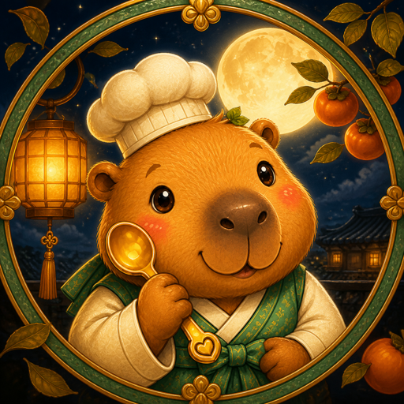
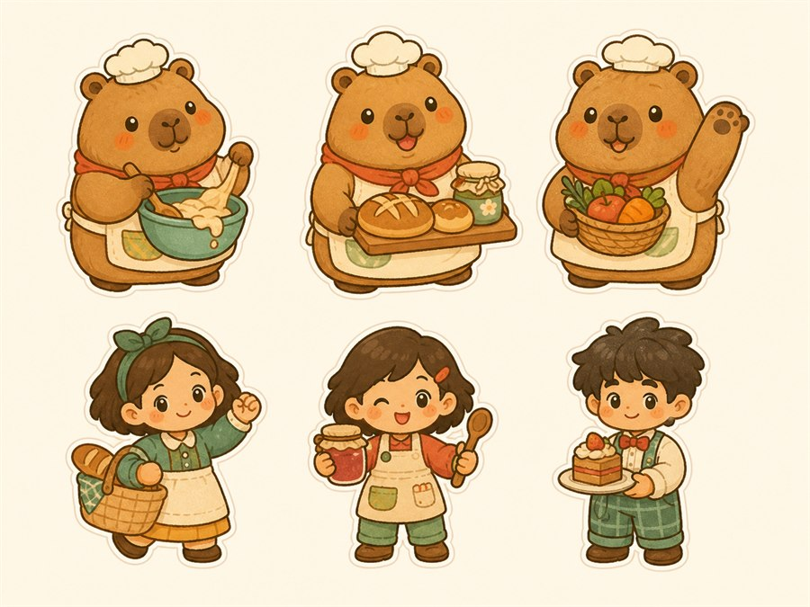
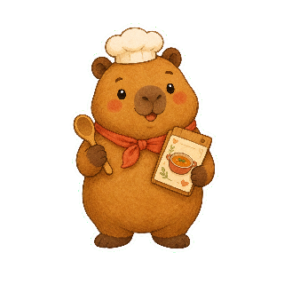
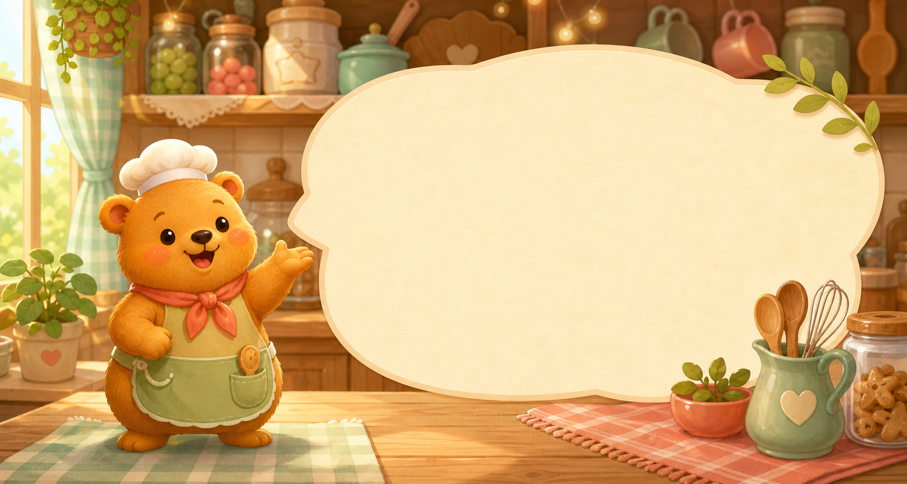
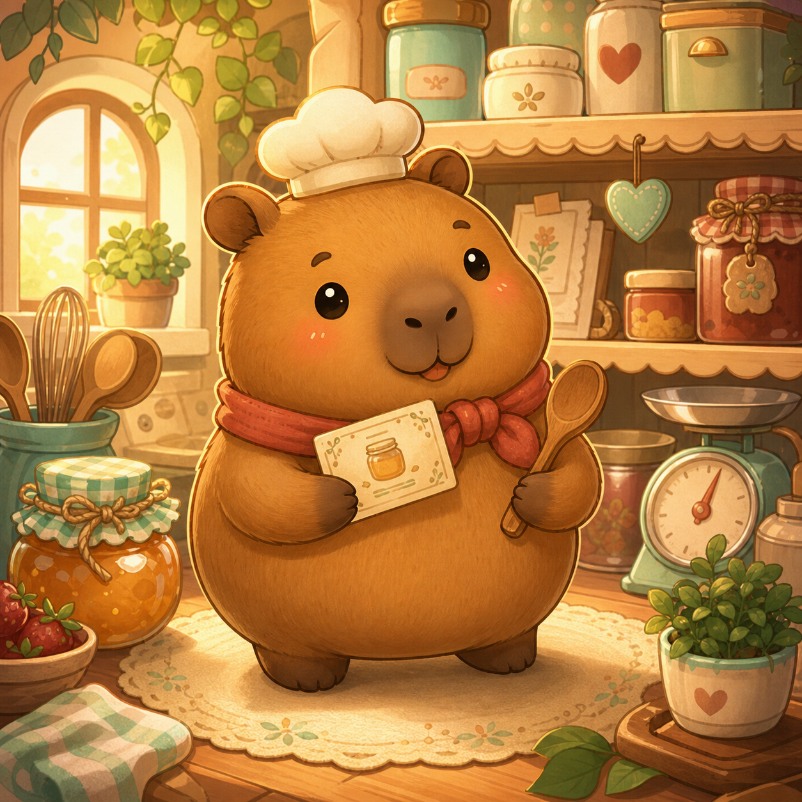
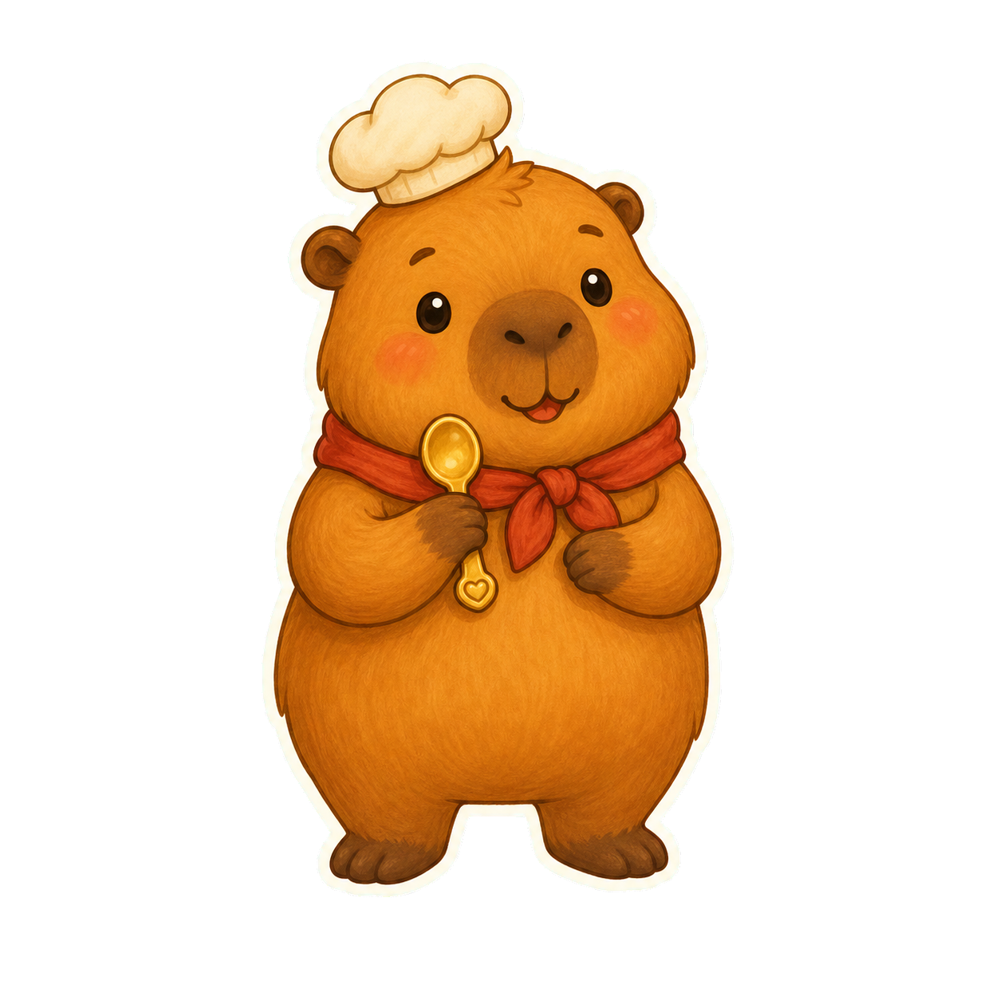
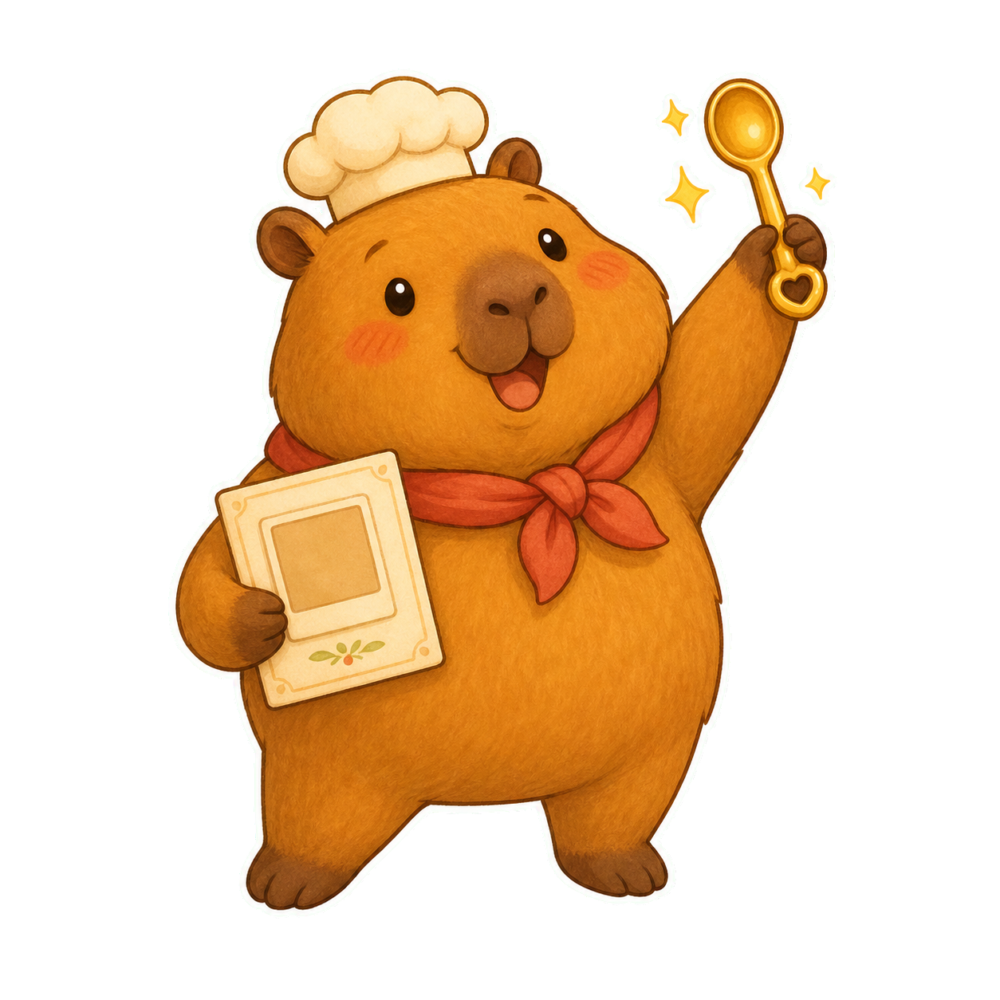

App Icon Baseline

Useful for face, hat, scarf, warm outline, and first-impression continuity.
Sunny Spoon Studios Art Review
Experimental review board for comparing the current Sunny Spoon/Pip baseline, rejected drift, and hidden master/chrome/completion candidates before anything becomes player-facing.

Useful for face, hat, scarf, warm outline, and first-impression continuity.

Current approved guide fallback, but still part of the mixed legacy/candidate debt.

Visible UI reference only until the coordinated master art pass replaces it.

Current completion reaction art; should become more unified with the final Pip model.

Polished and cute, but rejected because it reads as an unfamiliar mascot, not Pip.

Review for capybara-like Pip identity before it can guide icon, guide, reward, or effect art.

Potential replacement for the visible header/chrome Pip sticker after explicit identity approval.

Potential replacement for completion reaction art after checking it still reads as Pip.